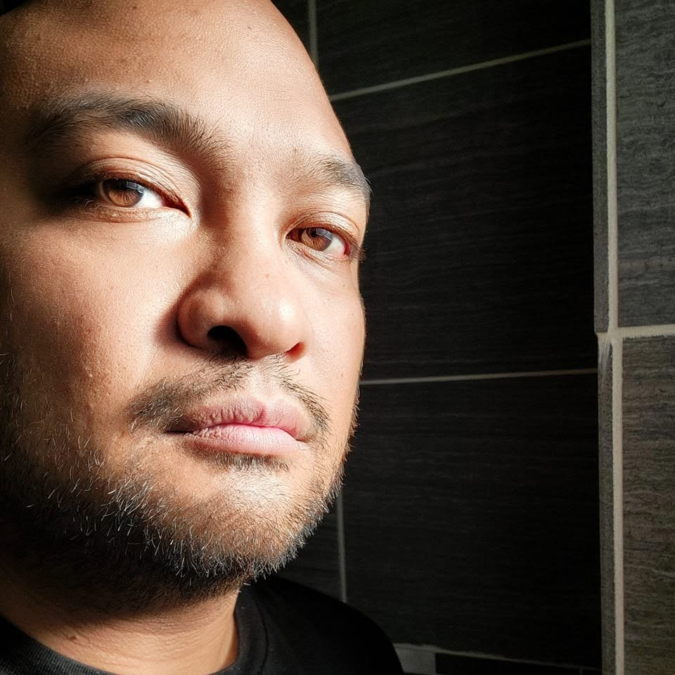

About Us
Kamaria Hill
My name is Kamaria Hill and I’m currently a first year graduate student in the Information School. My academic pursuits lie at the intersection of Artificial Intelligence, Cybersecurity and User Experience. I registered for the LIS500: Code & Power class at the suggestion of our Graduate Program Director. However, the course topic did pique my curiosity in the way that it was framed: ‘Code & Power’ After a few weeks of coursework I can easily see the connection and need for exploration but at first glance (prior to the start of class), the connection - or need for a connection - was not clear to me. I see this course having the potential to be a great benefit to my studies and future career goals especially because unintended bias in AI models is something I want to highlight and actively work to counter. While I’m not studying, I enjoy creating and making. Machine embroidery, laser engraving and sublimation are currently my crafts of choice.
Mike Bacos
Location: Chicago, IL
Education: BA International Relations - American Military University, MS Journalism - Northwestern University, MS Information (in progress) - University of Wisconsin

Bio:
A Filipino-American who has been through various phases of life. From aircraft carrier flight decks while serving in the U.S. Navy as an aviation electrician on F-14s, to competing in muay thai bouts in Chiang Mai, Thailand, to pressing a camera lens against the octagon as a photojournalist covering Ultimate Fighting Championship fights, I’ve lived a not-so-ordinary life. Eventually, I settled down professionally after journalism school and found my way doing social media marketing for various nonprofits including the Buffett Institute at Northwestern University, Wounded Warrior Project, and currently at the Chicago Police Department.
However, I plan on moving to Madison next semester to finish my program in-person.
My professional interests are how misinformation is spread through social media, AI, UX, and cybersecurity.